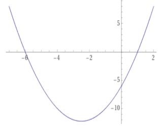

2. asteen yhtälöt ja epäyhtälöt
Contents
2. asteen yhtälöt ja epäyhtälöt#
Toisen asteen yhtälön perusmuoto
\(a x^2 + bx + c = 0\)
Ongelma, joka voidaan ratkaista 2. asteen yhtälöllä
Esim. Suorakaiteen muotoista tonttia ympäröivän aidan pituus on 100 m ja tontin ala on 600 m². Määritä tontin sivujen pituudet.
Vastaus: Tontin sivut ovat 20 m ja 30 m.
Ratkaisu:
Merkitään tontin sivua x:llä. Toinen sivu on tällöin 50 - x ja tontin alan lauseke on x(50-x).
Ratkaistaan x yhtälöstä
\( x(50-x)=600\)
\( 50x-x^2=600\)
\( -x^2+50x-600 = 0\)
Käytetään ratkaisukaavaa \(x = \frac{-b\pm \sqrt{b^2-4ac}}{2a}\)
Sijoittamalla a=-1, b=50 ja c=-600 saadaan kaksi ratkaisua:
\( x = 20\) tai \(x = 30\)
Jos x=20, toinen sivu on 50-20=30. Toinen ratkaisu x=30 johtaa samoihin sivujen pituuksiin.
Vastaus: sivujen pituudet ovat siten 20 m ja 30 m
Toisen asteen yhtälön ratkaisumenetelmiä#
Toisen asteen yhtälön ratkaisukaava
Perusmuotoinen 2. asteen yhtälö \(a x^2 + bx + c = 0\) voidaan aina ratkaista ratkaisukaavalla
\(x = \frac{-b\pm \sqrt{b^2-4ac}}{2a}\)
Ratkaise yhtälö \( 1.7 x^2 + 5.2x - 11.2 = 0\)
Vastaus: x = -4.52 tai x = 1.46
Ratkaisu:
Sijoitetaan ratkaisukaavaan a = 1.7, b =5.2 ja c = -11.2
\(x = \frac{-5.2\pm \sqrt{5.2^2-4\cdot1.7\cdot(-11.2)}}{2\cdot1.7}\)
x = -4.52 tai x = 1.46
Vaillinnainen 2. asteen yhtälö \(a x^2 + b\cdot x=0\)
Yhtälön vasen puoli voidaan kirjoittama tulomuodossa, jolloin yhtälö saa muodon
\(x(a x + b) = 0\)
Tulon nollasäännön mukaan tulo = 0 vain jos joku sen tekijöistä on nolla.
Siten x = 0 tai a x + b = 0. Jälkimmäisen yhtälön juuri on x = -b/a
Ratkaisut ovat siten \(x = 0\) tai \(x = -b/a\)
Ratkaise yhtälö \( 1.2 x^2 + 9.2 x = 0\)
Vastaus: x = -7.67 tai x = 0
Ratkaisu:
Otetaan vasemmalta puolen x yhteiseksi tekijäksi
\(x(1.2 x + 9.2) = 0\)
\(x = 0\) tai \(1.2 x + 9.2 = 0\)
\(x = 0\) tai \(x = -9.2/1.2 =- 7.67\)
Ratkaisut: x = -7.67 tai x = 0
Vaillinnainen 2. asteen yhtälö \(a x^2 + c=0\)
Ratkaistaan yhtälö 1. asteen yhtälön tapaan neliön \(x^2\) suhteen.
\( a x^2 = -c\) => \( x^2 = \frac{-c}{a}\)
Jos oikea puoli -c/a on negatiivinen, ei yhtälöllä ole ratkaisuja.
Jos -c/a on positiivinen, saadaan kaksi ratkaisua neliöjuuren otolla:
Ratkaisut ovat \(x = -\sqrt{-c/a}\) tai \(x = \sqrt{-c/a}\)
Ratkaise yhtälö \( 5.1 x^2 - 3.2 = 0\)
Vastaus: x = -0.79 tai x = 0.79
Ratkaisu:
Ratkaistaan yhtälö aluksi \(x^2\):n suhteen
\( 5.1 x^2 = 3.2\)
\( x^2 = 3.2/5.1 = 0.627\)
Ratkaistaan lopuksi x:
\(x = \pm \sqrt{0.627} = \pm 0.79\)
Ratkaisut: x = -0.79 tai x = 0.79
Toisen asteen yhtälön graafinen ratkaiseminen
Toisen asteen polynomifunktion \(y = a x^2 + b x + c\) kuvaaja on paraabeli.
Perusmuotoinen 2. asteen yhtälö \(a x^2 + b x + c = 0\) voidaan ratkaista grafiikkalaskimella piirtämällä yhtälön vasemman puolen polynomifunktion kuvaaja. Yhtälön ratkaisut voidaan lukea paraabelin ja x-akselin leikkauspisteistä.
Esimerkki. Ratkaise yhtälö \(x^2+5x-6=0\) graafisesti.
WolframAlpha:n plot
WolframAlpha.com -laskimessa funktion kuvaaja piirretään komennolla plot
esim. plot \(x^2+5x-6\)
Piirrettävää kohtaa kuvaajasta voi tarkentaa from … to… määreillä muotoon
plot \(x^2+5x-6\) from -8 to 3

Kuvaajasta luettu yhtälön ratkaisu on seuraava. x = -6 tai x = 1
2. asteen yhtälön juurten lukumäärä#
Toisen asteen yhtälön ratkaisukaavassa \(x = \frac{-b\pm \sqrt{b^2-4ac}}{2a}\) neliöjuuren sisällä olevaa lauseketta \(b^2 - 4 a c\) kutsutaan diskriminantiksi
Diskriminantin etumerkki määrää yhtälön ratkaisujen lukumäärän.
Toisen asteen yhtälön ratkaisujen lukumäärä
Yhtälön \(a x^2 + b x + c = 0\) diskriminantti D = \(b^2 - 4 a c\)
Jos D > 0, yhtälöllä on kaksi eri suurta reaalijuurta
Jos D < 0, yhtälöllä ei ole reaalisia ratkaisuja
Jos D = 0, yhtälöllä on yksi reaalinen ratkaisu